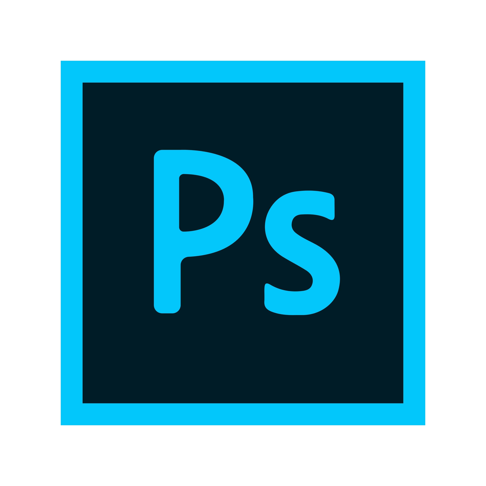

<!DOCTYPE html>
<html lang="en">
	<head>
	  <meta charset="UTF-8">
	  <meta http-equiv="X-UA-Compatible" content="IE=edge">
	  <meta name="viewport" content="width=device-width, initial-scale=1.0">
	  <link rel="shortcut icon" href="favicon.ico">
	  <!-- google fonts -->
	  <link href="https://fonts.googleapis.com/css2?family=Roboto+Condensed&display=swap" rel="stylesheet">
	  <!-- font-family: 'Roboto Condensed', sans-serif; -->
	  <link href="https://fonts.googleapis.com/css2?family=Oxygen:wght@300;700&display=swap" rel="stylesheet">
	  <!-- font-family: 'Oxygen', sans-serif; -->
	  <link rel="stylesheet" type="text/css" href="style.css" >
	  <!-- Twitter Card -->
	  <meta name="twitter:card" content="summary_large_image">
	  <meta name="twitter:site" content="@shihabiiuc">
	  <meta name="twitter:creator" content="@shihabiiuc">
	  <meta name="twitter:title"
	    content="Your Name -Portfolio">
	  <meta name="twitter:description"
	    content="This is a portfolio website template that is free to download and use. You can edit this template and create your portfolio website in half an hour.">
	  <meta name="twitter:image" content="assets/images/social-media-thumbnail.jpg">
	  <!-- Twitter Card End -->  
	  <!-- Linkedin & Facebook Card -->
	  <meta property='og:title'
	    content="Your Name -Portfolio" />
	  <meta property='og:image' content="assets/images/social-media-thumbnail.jpg" />
	  <meta property="og:type" content="website" /><!--  og:type is only for Facebook-->
	  <meta property='og:description'
	    content="This is a portfolio website template that is free to download and use. You can edit this template and create your portfolio website in half an hour." />
	  <meta property='og:url' content="assets/images/social-media-thumbnail.jpg" />
	  <!-- Linkedin Card End -->
	  <title>Your Name -Portfolio</title>
	</head>
	<body>

	</body>

  		<script src="script.js"></script>
	</body>
</html>

<nav class="site-header">
	<div class="nav-logo">
	  <a href="index.html">
	    
	  </a>
	</div>
	<button class="hamburger"></button>
	<div class="nav-links">
	  <ul>
	    <li><a href="index.html">Home</a></li>
	    <li><a href="#about">About Me</a></li>
	    <li><a href="#skill">Skills</a></li>
      <li><a href="#qualification">Qualification</a></li>
      <li><a href="#work-experience">Work Experience</a></li>
	    <li><a href="#education">Education</a></li>
	    <li><a href="#contact">Contact</a></li>
	  </ul>
	</div>
</nav><!-- .site-header -->


<section class="banner">
  <div class="banner--content">
    <h3 class="name">Ahmad Amsyar Huzaifi</h3>
    <h1 class="designation">My Career as a University Student</h1>
    <p class="tagline">決してあきらめないでください 創造的な可能性を解き放ちましょう.</p>
  </div>    
</section><!-- .banner -->
<section class="promo">
<div class="content">
  <h2>I will bring my <span class="bold">ideas</span> to life<span class="orange">.</span></h2>
  <p>With transforming Knowledge into Innovation.</p>
</div>
</section>


<section id="about">
  <div class="content">
    <h2>About Me</h2>
    <div class="about-container">
      <div class="about-container-left">
        <p>Hello! I'm Ahmad Amsyar Huzaifi bin Muhammad Rafidi, a passionate university student with a love for creativity, anime, gaming, and the thrill of go karting. Currently pursuing my Information at Universiti Teknologi Mara, I'm dedicated to expanding my knowledge and honing my skills in [specific area of interest]..</p>
        <h3>You can often me exploring captivating</h3>
        <ul>
          <li>Worlds of anime and video games</li>
          <li>Involved in various academic and extracurricular activities</li>
          <li>Or maybe i like to being lazy sometimes, cause why not :)</li>
        </ul>
        <p>One of my biggest thrills is go karting, an exhilarating activity that brings out my competitive spirit. While I may not have access to a go kart track as much as I'd like, the rush of speed and the precision required on the track have taught me valuable lessons in focus, determination, and embracing challenges head-on..</p>
        <h4>What i look in future</h4>
        <p>I'm excited to merge my passion for System Management (if posible) with my interests in anime, gaming, and beyond. I aspire to contribute my creativity, problem-solving skills, and dedication to projects that make a meaningful impact. I'm thrilled to connect with like-minded individuals, collaborate on exciting opportunities, and bring ideas to life. Let's embark on a journey together!</p>
      </div>
      <div class="about-container-right">
        
      </div>
    </div>
  </div>
</section><!-- #about -->


<section id="skill">
  <div class="content skill--content">
    <div class="left">
      <h2>My skills & expertise</h2>
      <p>Regarding my skills in graphic design, I have a basic proficiency in Adobe Photoshop, Illustrator, and InDesign. While I consider myself at a beginner level, I am actively learning and exploring these powerful design tools. I have gained hands-on experience in creating simple graphics, editing images, and designing layouts. I am eager to further enhance my skills and expand my knowledge in these software applications to create more visually appealing and engaging designs..</p>
    </div>
    <div class="right">
      <div class="item">
        
        <h3>Abode Photoshop</h3>
        <p>For Photoshop, i just learn on how to create Infographic. Well it does not sounds good but i'm so proud about it.</p>
      </div>
      <div class="item">
        
        <h3>Abode Illustrator</h3>
        <p>For Adobe Illustrator, i'm learn how to make a poster. Basic of all basic but quite challenging for a newbie like me since i never use Ai before..</p>
      </div>
      <div class="item">
         
        <h3>Abode InDesign</h3>
        <p>This is the hardest part. I need to create a magazine using InDesign and yeah it was also my first time using InDesing. I faced some trouble but i manage to overcome it and this project was done in group.</p>
      </div>
    </div>
  </div>
</section><!-- #skill -->

<section id="qualification">
  <h2>My Qualifications</h2>
  <div class="content qualifications--content">
    <div class="item">
      <h3>Library Management</h3>
      
      <p>My target course is System Management but i can also choose Library Management if i want to become a liobrarian.</p>
    </div><!-- item -->
    <div class="item">
      <h3>A Graphic Design</h3>
      
      <p>Graphic Designer sounds like out of the way for my course but practice make perfect.</p>
    </div><!-- item -->
    <div class="item">
      <h3>Become a Web Development</h3>
      
      <p>If possible, i want to become a web development since my Information Management course also studied a basic HTML and Css.</p>
    </div><!-- item -->
  </div>
</section><!-- #qualifications -->


<section id="work-experience">
  <h2 class="center">Work Experience - Previous Roles</h2>
  <div class="content work-experience--content">
    <div class="item">
      <h3>Company A</h3>
      
      <p>To be honest i don't have a work experience in my life</p> 
      <p>Because of that in semester break, i'm looking for some job to earn some experience and some money.</p>
    </div><!-- item -->
  </div>
</section><!-- work-experience -->


<section id="education">
  <h2>Education - My Academic Background</h2>
  <div class="content education--content">
    <div class="item">
      <h3>Universiti Teknologi Mara</h3>
      <p>Degree</p>
      <p>Major: System Management(OTW)</p>
      <p>Year: 2023 - 2025</p>
    </div><!-- item -->
    <div class="item">
      <h3>Universiti Teknologi Mara</h3>
      <p>Diploma</p>
      <p>Major: Information Management</p>
      <p>Year: 2021 - 2023</p>
    </div><!-- item -->
    <div class="item">
      <h3>Maahad Pengajian Islam</h3>
      <p>SPM, SMU and PT3</p>
      <p>Year: 2015 - 2019</p>
    </div><!-- item -->
  </div><!-- .education--content -->
</section><!-- education -->


<section id="contact">
  <div class="content">
    <h2 class="center">Contact Me</h2>
    <p class="center contact-detail">Feel free to get in touch with me for any inquiries or collaboration opportunities. I'm always open to have a little chat. Whether you have a question, want to discuss an idea, or simply say hello, I'd love to hear from you. Reach out to me using the contact details below and I'll get back to you as soon as possible.</p>
    <address>
      <p>Email Me: <a href="aamsyar139@gmail.com">aamsyar139@gmail.com</a></p>
      <p></p>Call me: <a href="tel:+601123618107">+601123618107</a></p>
      <p>Office address: Lot 1536 Lorong Kubur Maras, Langgar<br>
        Kota Bharu, Kelantan.</p>
    </address>
  </div>
</section>

<footer class="site-footer">
  <div class="content site-footer--content">
    <div class="footer-left">
      
      <p>As a university student aspiring to be a programmer, I am continuously honing my skills and seeking opportunities for growth. Despite facing academic challenges in the past, I am determined to excel in my studies and become a proficient programmer if posible. My journey is a testament to resilience and the pursuit of knowledge.</p>
    </div>
    <div class="footer-right">
      <address>
        <p>Email Me: <a href="aamsyar139@gmail.com">aamsyar139@gmail.com</a></p>
        <p></p>Call me: <a href="tel:+601123618107">+601123618107</a></p>
        <p>Home address: Lot 1546 Lorong Kubur Maras, Langgar<br>
          Kota Bharu, Kelantan.</p>
      </address>
    </div>
  </div>
  <div class="copyright-notice">
    <p>© <time datetime="2023">2023,</time> All rights reserved by Ahmad Amsyar Huzaifi</p>
  </div>
</footer>